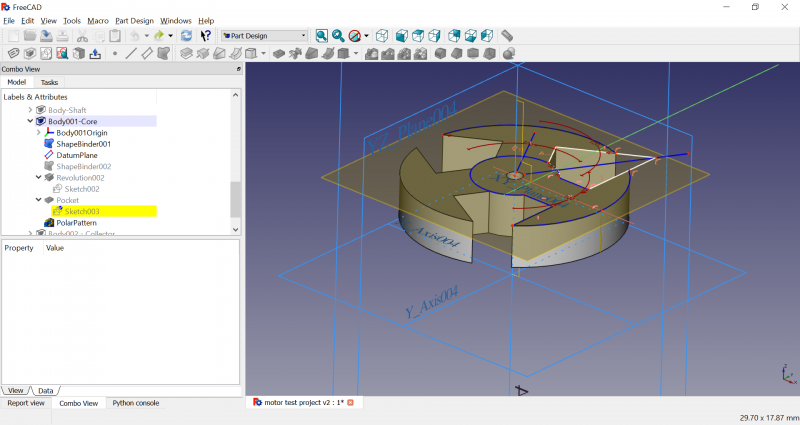

FreeCAD 0.17 è stato rilasciato il 06 aprile 2018, è possibile ottenerlo dalla pagina Download. Questo è un riassunto delle modifiche più interessanti. L'elenco completo delle modifiche è disponibile nel MantisBT bugtracker FC 0.17 changelog.
Le note di rilascio delle versioni precedenti di FreeCAD sono disponibili nella pagina Per iniziare.

Garden Railway Coach O&K (by FreeCAD-User "Garden Railway Coach O&K", see Users Showcase)
Contents
Punti salienti
Sono trascorsi quasi due anni dalla precedente versione 0.16, ma il team di FreeCAD non è rimasto inattivo durante questo periodo. Sono state apportate più di 6.800 revisioni al codice sorgente di FreeCAD. Per confronto, questo è più del triplo del lavoro svolto tra la v0.16 e la v0.15! La maggior parte degli ambienti esistenti ha beneficiato di miglioramenti e sono stati aggiunti due nuovi ambienti di lavoro. Nuovi moduli aggiuntivi sono stati sviluppati anche dalla comunità. Alcuni dei punti salienti:
L'ambiente PartDesign è stato completamente revisionato. Ora c'è un nuovo contenitore chiamato Corpo che contiene una catena di funzioni e solleva dalla necessità di mappare gli schizzi su delle facce planari. Ci sono dei nuovi strumenti per creare le geometrie datum (riferimento) come punti, assi e piani che rendono PartDesign molto più versatile.

Il nuovo Addon manager disponibile dal menu Strumenti (che era precedentemente disponibile come addons installatore di macro) rende l'installazione e l'aggiornamento di moduli e macro aggiuntivi molto più semplice e standardizzato per Windows, Mac OS X e Linux.

Sketcher ora supporta la creazione delle B-spline con molti modi per controllare le curve e visualizzare le informazioni sulla curva.
Il nuovo ambiente TechDraw mira a sostituire il workbench Drawing e fornisce già più funzionalità del vecchio workbench Drawing.

Aspetti generali
- Yorik van Havre ha scritto il "Manuale di FreeCAD" come un libro introduttivo su come usare FreeCAD.
- Ii ricalcolo del documento ora può essere disabilitato o abilitato tramite il menu di scelta rapida.
- C'è un nuovo stile di navigazione Revit.
- Un nuovo indicatore di navigazione nella parte inferiore destra della finestra di FreeCAD consente un rapido accesso agli stili di navigazione.

- Il grafico delle dipendenze ha beneficiato di miglioramenti grafici.
- L'importazione STEP sfrutta il nuovo contenitore Part e lo usa per organizzare un assemblaggio STEP importato in sottoinsiemi, ora più vicino alla struttura del documento originale. Ora è supportato stpZ (un formato STEP compresso).
- La maggior parte delle icone di FreeCAD sono state rielaborate per rispettare meglio le linee guida di Tango.
- The FreeCAD project acknowledges the contributions of its community by adding a Credits tab in the About FreeCAD dialog. New License and Libraries tabs list FreeCAD's license and provide info on used third-party libraries.

Ambiente Arch
- Nuovo strumento Scheda: Questo strumento è stato completamente riscritto e offre ora un modo molto più flessibile di raccogliere i dati dal documento in un foglio di calcolo, utilizzando diversi tipi di query, come il conteggio di tutti gli oggetti di un certo tipo o la somma del volume totale di una determinata categoria di oggetti.
- Nuovo set di strumenti Tubazioni per progettare sistemi di tubazioni. Si possono usare linee, schizzi o polilinee come base per posizionare i tubi e creare automaticamente le connessioni tra 2 o 3 tubi.
- Lo strumento Struttura è stato ora esteso con una serie di nuovi preset per la costruzione di elementi prefabbricati in calcestruzzo.
- Durante l'edizione 2017 del Google Summer of Code, a cui ha partecipato FreeCAD, lo strumento Armatura è stato notevolmente ampliato e ha ottenuto un'interfaccia utente amichevole per aggiungere facilmente diversi tipi standard di barre di rinforzo alle strutture in calcestruzzo.

- Finestre ha ottenuto diversi miglioramenti, come la possibilità di definire i sottocomponenti come apribili, mostrare i simboli di apertura, apparire aperti e avere pannelli per le persiane.

- Gli strumenti Assi sono stati anche riscritti e consentono sistemi più complessi combinando insieme diverse serie di assi. Possono anche essere personalizzati per mostrare diversi tipi di situazioni come i livelli.
- Un nuovo strumento Griglia consente di creare facilmente oggetti base simili a fogli di calcolo allungando, unendo o dividendo le celle. Questi oggetti griglia possono quindi essere utilizzati come sistemi di assi o come basi per complesse disposizioni di finestre o pannelli.
- I nuovi Strumenti Pannello sono stati progettati specificamente per la costruzione di pannelli. Permettono di costruire un modello composto da Pannelli Arch, e quindi generare fogli da taglio che possono essere usati dall'ambiente Path per generare il codice della macchina da taglio.
- Il nuovo strumento Nido (ancora sperimentale), consente di comporre fogli da taglio posizionando automaticamente le forme 2D in una forma contenitore.
- Nell'ambiente Arch sono stati introdotti i Multi-materiali. Consentono di creare automaticamente muri multistrato o di controllare i diversi materiali degli oggetti composti come le finestre.
- Gli esportatori di Arch per OBJ e DAE ora supportano i materiali, sia durante l'importazione che l'esportazione.
- È stato aggiunto il supporto all'importazione per il formato 3DS.
Ambiente Draft
- Sistema autogruppo: Draft ora dispone di un pulsante di raggruppamento automatico sulla barra principale degli strumenti. Quando è attivato, tutti gli oggetti Draft e Arch appena creati vengono posizionati automaticamente in quel gruppo.
- Strumento Pendenza: Se usato su una Linea o Polilinea, questo strumento permette di dargli una determinata pendenza o inclinazione. Cioè, i punti intermedi e finali avranno un valore Z più basso, quindi l'intero oggetto ottiene un'inclinazione costante. Questo è utile per usare delle linee o delle polilinee come basi per oggetti che hanno bisogno di un'inclinazione precisa, come le falde del tetto o i tubi di una fognatura.
- Piano proxy: Quando si lavora con i piani di Draft, spesso è necessario memorizzare le posizioni del piano di lavoro che si utilizzano sovente. Ora questo è possibile inserendo uno di questi proxy nel documento. Esso ricorderà l'attuale posizione del piano di lavoro e può anche ripristinare la vista corrente o la visibilità degli oggetti.

- Stira: Ora Draft dispone di uno strumento di allungamento, che consente di spostare contemporaneamente i vertici di diversi oggetti Draft.
- Etichetta: Con questo strumento, è possibile inserire delle etichette nel documento, esse sono composte da un testo e da una linea guida che può essere libera o attaccata ad un oggetto specifico. È possibile creare un testo personalizzato o visualizzare automaticamente il contenuto di una proprietà dell'oggetto di destinazione.

Ambiente FEM
- FEM Mesh
- Gmsh object is a mesh object, which allows to use Gmesh meshing tool inside FreeCAD. Various options of Gmesh are supported.
- Boundary layer object for gmsh makes it possible to create boundary layer.
- Mesh group object for gmsh makes it possible to create nodes and element groups. The names can be changed by the user.
- Mesh region object for gmsh makes it possible to define mesh regions with different mesh element size for nodes, edges, faces and volumes.
- GUI clear mesh tool clears the mesh but keeps all mesh adjustments. This is very handy if files should be shared.
- GUI print mesh info tool print all kind of mesh informations.
- GUI mesh view provider is able to display quad face mesh as well as hexaeder, pentaeder and pyramid mesh elements.
- Mesh data model was updated to SMESH to version 7.7.1 https://github.com/FreeCAD/FreeCAD/commit/666a3e5a
- Mesh API was extended to read mesh group data out of the FreeCAD SMESH FEM mesh data by Python. This was the base for the Gmsh group object.
- Mesh API was extended to export mesh groups to Abaqus and CalculiX inp file format.
- FEM mesh 2 mesh tool converts a surface of a volume mesh into a mesh for FreeCAD's mesh module.
- Mesh problems: Non-positive Jacobians are an often seen problem in FEM meshes. Elements which have non-positive Jacobians in CalculiX solver are colored in FreeCAD.
- Fenics Import and export of Fenics mesh format has been added.
- Objects
- Beam rotation object enables the analysis of beams rotated around their main axis.
- Nonlinear material object adds nonlinear material behavior to FreeCAD FEM. It supports linear change of stress strain curve.
- Fluid material ...
- Constraint initial flow velocity ...
- Constraint fluid boundary
- Constraint electrostatic potential ...
- Constraint body heat source ...
- Constraint transform ...
- Constraint temperature ...
- Constraint contact ...
- Constraint plane rotation ...
- Constraint self weight ...
- Solver
- Solver frame work was written from scratch during a Google Summer of Code project.
- Support for FEM solver software ElmerFEM, https://www.csc.fi/web/elmer, was added.
- Inside the solver frame work the analysis type can be chosen by an equation object (Elmer solver only, ATM.)
- Basic support for FEM solver software Z88, https://en.z88.de/z88os/, was added.
- CalculiX was ported to the solver frame work. The ccxtools solver object remains in FreeCAD FEM because it is very well tested and has extended pre checks.
- Calculix analysis
- Coupled Thermal Structural Analysis ...
- 1D pipe Flow analysis Analysis ...
- Coupled Beam Shell Solid models ...
- Standard Post Processing
- Shell and beam 3D output Make it possible to output shell and beam analysis as 3D solid output to see stresses in sections.
- Peeq strain Support for equivalent plastic strain has been added to the result object, result reader and vtk post processing.
- Extended Post Processing
- 'VTK An extended post processing based on VTK has been added.
- Clip filter ...
- Scalar clip filter ...
- Cut filter ...
- Wrap vector filter ...
- Linearized stresses ...
- Data at point A tool to get the result data for a specific point.
- Data along line A tool to get the result data for a specific line printed as a diagram.
- Fixes, code and other stuff
- The unit tests suite for FEM work bench has been extended.
- The code basis has been massively improved.
- Most of FEM code has been ported to Python3.
- Furthermore there have been tons of bugs found and fixed.
- All icons have been nicely redrawn and in conjunction with guidelines.
- Code formating There should be no more tabs and white spaces in all FEM source code.
- Python codes is according most rules of flake8.
- Dozens of typos inside source code have been fixed (AFAIK this applies to all FreeCAD, luzpaz finds all of them like finding a needle in the haystack).
- Some Pictures

{kind=link}
{kind=link}
Ambiente Part
- Il kernel di modellazione geometrica di Open Cascade è stato aggiornato dalla 6.8.0 alla 7.2.0 (la versione OCC effettiva può dipendere dalla piattaforma o dalla distro). Questa versione apporta molte correzioni di bug nelle operazioni booleane, nell'algoritmo di rimozione delle linee nascoste e consente di aggiungere nuove funzionalità al workbench Part.
- Nuove funzioni: Frammenti Booleani, Slice e XOR.
- Grazie alle nuove funzionalità di cui sopra, ora in FreeCAD possono essere creati anche i solidi compositi (compsolid). Sono di grande utilità in FEM.
- Congiunzione: le prestazioni e l'affidabilità sono state migliorate e lo strumento è stato reso più versatile.
- Nuova funzione: Offset 2D, per creare un offset di contorni planari.
- Miglioramenti: Estrusione ora supporta la direzione normale parametrica, la direzione controllata dal bordo collegato, l'inversione, della 2a lunghezza, il 2 ° angolo di conicità e la simmetria. Inoltre, la casella di controllo Rendi solido ora è selezionata automaticamente se si apre la finestra di dialogo e si seleziona un contorno chiuso (ad es. uno schizzo).
- Miglioramenti: Rivoluziona ora supporta il collegamento parametrico all'asse di rivoluzione.
- La nuova utility Associazione accessibile dal menu Part → Attachment… può essere usata per collegare parametricamente la maggior parte dei tipi di oggetti ad altre geometrie.
- Il nuovo contenitore Part può essere usato per raggruppare la maggior parte di tipi di forme e spostarle come una unità. Contiene inoltre piani e assi standard a cui allegare oggetti. Servirà come base per il futuro ambiente di Assemblaggio fornendo un modo per spostare le parti. È disponibile in tutti i workbench da una barra degli strumenti insieme a Gruppo.
Ambiente PartDesign
Il workbench PartDesign ha ricevuto enormi cambiamenti, frutto degli sforzi congiunti di più sviluppatori per un periodo di 5 anni. 
{kind=link}
- Il nuovo contenitore Corpo contiene una catena di funzioni di PartDesign che costituiscono un singolo solido contiguo. Contiene inoltre piani e assi standard a cui allegare gli oggetti. Grazie al contenitore Body, non è più necessario mappare gli schizzi sulle facce durante l'aggiunta di funzioni. Questo requisito rappresentava un limite importante del vecchio PartDesign, che poteva causare l'interruzione di molti modelli in seguito alle modifiche dei parametri. Pertanto, ora si consiglia di evitare di mappare gli schizzi sulle facce quando è possibile.
- Nuove funzioni di riferimento (datum), quali sono piani, linee e punti utili per posizionare schizzi, allineamento e servire come assi di rivoluzione.
- Nuovo passaggio automatico tra gli ambienti PartDesign e Sketcher. Quando si crea un nuovo schizzo dall'interno di PartDesign, e l'associazione dello schizzo è impostata, l'interfaccia utente passa automaticamente a Sketcher e ai relativi strumenti in modalità di modifica. Quando lo schizzo viene chiuso, l'interfaccia utente ritorna a PartDesign e ripristina la vista al suo stato precedente. Pertanto, gli strumenti di Sketcher sono stati rimossi dalle barre degli strumenti di PartDesign per liberare spazio per le nuove funzioni di PartDesign.
Ambiente Path
Il workbench Path è stato ampiamente revisionato nella versione 0.17. La revisione ha visto la rimozione di tutti i vecchi codici HeeksCNC e la sostituzione del wrapper libarea python con il nuovo modulo Path-Area. Di conseguenza le operazioni sono diventate molto più potenti, più veloci, con una base di codice semplificata.
- Il supporto per le operazioni 2.5D è completo e include contour, face-milling, pocketing, profiling, e drilling
- Supporto limitato per le operazioni 3D pocketing.
- Path può usare i Pannelli di Arch come oggetto base per raggruppare più parti insieme per il taglio 2D.
- Introduzione di Lavorazione. Ora la lavorazione è un oggetto centrale del flusso di lavoro del percorso. Organizza e coordina molteplici operazioni, utensili, materiale grezzo, orientamento e allineamento delle parti. Una lavorazione personalizzata può essere salvata come un "Modello di lavorazione" e riutilizzato per ottimizzare l'impostazione di lavorazioni future. Job SetupSheets fornisce un meccanismo per automatizzare la configurazione delle impostazioni di profondità e velocità.
- Tutte le operazioni hanno un'organizzazione coerente del pannello delle attività
- Nuovo o migliorato post-processore per LinuxCNC, Smoothieboard, GRBL, Phillips, OpenSBP (shopbot), Roland Modela, Centroid, Fablin, e Dynapath. La maggior parte dei post-processori supporta argomenti.
- Migliorata la libreria degli utensili e l'editore.
- Lo strumento Ispeziona G-code consente di evidenziare i singoli comandi per visualizzare il percorso ed esplorare il gcode.
- Lo strumento Simulatore CAM simula il taglio 3D per visualizzare l'esecuzione del percorso
- Le operazioni di vestizione possono essere utilizzate per perfezionare le operazioni principali e aggiungere ulteriore complessità. Esistono dressup per angoli 'dogbone', holding tags, rampe, e 'azioni d'angolo' dragknife
Ambiente Sketcher
- Ora gli schizzi possono essere applicati in un'ampia varietà di modi, non solo sulle facce piane come in passato. Di particolare importanza è l'attaccamento perpendicolare ai bordi, utile per creare i profili di sweep.
- I collegamenti alla geometria esterna non sono più limitati solo all'oggetto su cui lo schizzo è mappato. È supportata anche la geometria di altri schizzi. I collegamenti alla geometria esterna possono essere creati all'interno di un contenitore Parte, di un contenitore Corpo o anche di un intero progetto se non vengono utilizzati i contenitori Parte e Corpo.
- Automazione della visibilità: ora, quando si inizia a modificare uno schizzo, gli oggetti che dipendono da esso vengono automaticamente nascosti per rendere più nitida la vista e gli oggetti utilizzati per i collegamenti alla geometria esterna vengono visualizzati automaticamente; quando si chiude lo schizzo viene ripristinata la precedente vista.
- Nuova modalità di creazione continua dei vincoli: ora gli strumenti di vincolo sono attivi anche senza alcun elemento selezionato. Premere un vincolo, quindi selezionare gli oggetti a cui applicarlo.
- Nuovi strumenti per la creare arco di iperbole e arco di parabola.
- Nuovo strumento Estendi per modificare i bordi.
- Nuovo strumento per creare B-spline, con molti modi per controllare le curve (grado, molteplicità del nodo, peso del punto di controllo) e visualizzare le informazioni (poligono di controllo, pettine di curvatura, indicatore di molteplicità del nodo).

- Nuovo strumento Copia Carbone per copiare la geometria da un altro schizzo.
- Lo spazio virtuale sposta tutti i vincoli in un "spazio virtuale" diverso, in realtà li nasconde alla vista.
- La scheda di elenco dei Vincoli include la possibilità di nascondere l'allineamento interno e permette l'occultamento individuale dei vincoli con una casella di controllo.
- Il vincolo Fissa rimuove tutti i gradi di libertà di un elemento di geometria e fissa la sua posizione con un singolo vincolo. Dovrebbe essere particolarmente utile per lavorare con le B-Spline, che sono complicate da vincolare.
- Nuovo strumento Poligono regolare con numero di lati definito dall'utente.
- Solutori dello schizzo alternativi e disponibili attivando Visualizza i controlli avanzati del risolutore nella barra delle applicazioni nelle preferenze di Sketcher.
- L'ordine di rendering basato sullo stile della geometria consente il riordino tra normale, costruzione e geometria esterna. Utile quando questi tipi di geometrie si sovrappongono.
- Il risolutore ora sostituisce automaticamente una combinazione di vincolo coincidente + vincolo di tangenza con un vincolo tangente punto-a-punto, poiché il primo modo è un uso improprio che induce un errore di tolleranza che può causare futuri problemi nel modello. L'utente viene avvisato della sostituzione tramite una finestra di dialogo che può essere disabilitata nelle preferenze dello Sketcher deselezionando "Notifica le sostituzioni automatiche dei vincoli".
- Nuova casella di controllo nella vista azioni in modalità di modifica "Evita gli autovincoli ridondanti"
- I vincoli orizzontale e verticale possono essere utilizzati per allineare i punti selezionati.
Ambiente Spreadsheet
- È stato aggiunto un importatore di file Excel.
Ambiente Surface
- Una nuova aggiunta in v0.17, per ora il workbench Surface ha 4 comandi per la creazione di superfici funzionanti.
Ambiente TechDraw
TechDraw è un nuovo workbench per la creazione dei disegni tecnici che mira a sostituire il workbench Drawing obsoleto. FreeCAD v0.17 è ancora fornito con il workbench Drawing in modo che si possa ancora aprire e modificare i file contenenti le pagine di Drawing, ma Drawing verrà eliminato gradualmente in una versione futura. Alcune delle interessanti novità che TechDraw offre:
- La maggior parte degli strumenti di Drawing ha una controparte in TechDraw.
- La creazione e manipolazione delle viste è più facile. Le viste possono essere afferrate dal loro bordo con il mouse e trascinate sulla pagina. L'allineamento delle viste ortogonali può essere bloccato.
- Migliore gestione del tipo di linea (hard, smooth, iso, seam). Migliore rimozione delle linee nascoste grazie ad una aggiornata libreria OCC.
- Vista in sezione, creazione di viste di dettaglio.
- Migliore gestione dei modelli.
- Il dimensionamento è supportato attraverso diversi strumenti di quotatura: orizzontale, verticale, lunghezza, radiale, diametro, angolare.
- Strumenti di decorazione: tratteggio, tratteggio compatibile con specifiche PAT Autodesk, simboli, immagini.
Moduli aggiuntivi
Alcuni dei nuovi moduli che sono stati creati dalla comunità.
- Manipolatore ha lo scopo di aiutare ad allineare, spostare, ruotare e misurare gli oggetti 3D (Part Design allowed) attraverso una GUI amichevole.
- Curves, una raccolta di strumenti per creare e modificare curve e superfici NURBS.
- Nurbs, una raccolta di script per la gestione di superfici e curve libere.
- Silk, a collection of NURBS surface modeling tools focused on low degree and seam continuity.
- Flamingo Workbench una serie di comandi e di oggetti FreeCAD personalizzati che consentono di velocizzare il disegno di strutture e tubazioni.
- GDT, dimensionamento geometrico e tolleranze (GD&T).
- InventorLoader per importare i file di Autodesk Inventor (in corso).
- Kicad StepUp Workbench ha lo scopo di aiutare gli utenti di KiCad e FreeCAD nella collaborazione ECAD e MCAD.